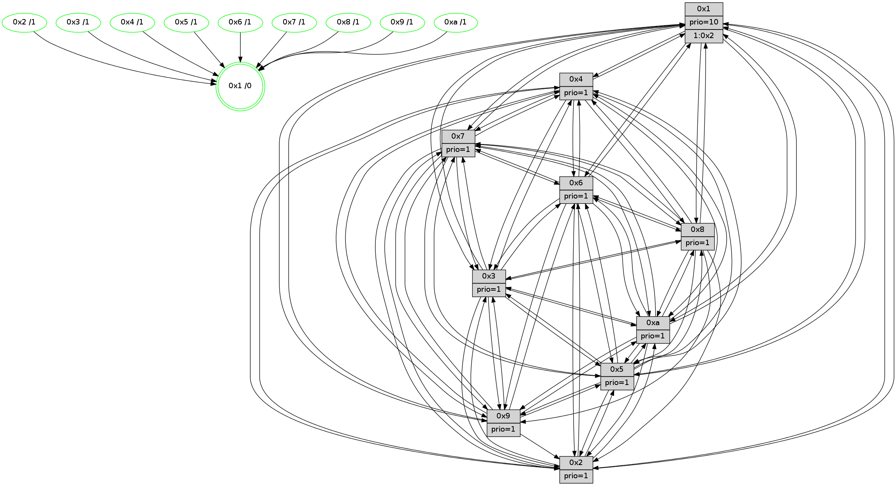

>> << IDX [start] -100 -25 -5 +0 +5 +25 +100 [500.103636026]
 Previous packets
----------------------------------------------------------------------
495.374846 beacon01(faad) #0 coord=01,02,03,04,05,06,07,0a,09,08 cycle=688.0ms assoc
-- color-indic=1 64 a0 6e
495.384828 beacon02(faad) #0 coord=01,02,03,04,05,06,07,0a,09,08 cycle=688.0ms assoc 64 33 5f
495.394829 beacon03(faad) #0 coord=01,02,03,04,05,06,07,0a,09,08 cycle=688.0ms assoc 64 49 12
495.404829 beacon04(faad) #0 coord=01,02,03,04,05,06,07,0a,09,08 cycle=688.0ms assoc 64 3e f8
495.414828 beacon05(faad) #0 coord=01,02,03,04,05,06,07,0a,09,08 cycle=688.0ms assoc 64 44 b5
495.424829 beacon06(faad) #0 coord=01,02,03,04,05,06,07,0a,09,08 cycle=688.0ms assoc 64 ca 62
495.434829 beacon07(faad) #0 coord=01,02,03,04,05,06,07,0a,09,08 cycle=688.0ms assoc 64 b0 2f
495.444834 beacon0a(faad) #0 coord=01,02,03,04,05,06,07,0a,09,08 cycle=688.0ms assoc 64 c1 24
495.454833 beacon09(faad) #0 coord=01,02,03,04,05,06,07,0a,09,08 cycle=688.0ms assoc 64 4f f3
495.464836 beacon08(faad) #0 coord=01,02,03,04,05,06,07,0a,09,08 cycle=688.0ms assoc 64 35 be
495.476414 [Hello(1): seq=228 sym=4,2,9,5,10,3,8,6,7 sysInfo=coloring-mode-on,ColoringModeRequestCalled stat=4:1,0,5,4/2:13,0,7,5/9:11,0,7,3/5:8,0,6,4/10:13,0,5,1/3:0,0,8,5/8:4,0,8,3/6:13,0,8,2/7:5,0,8,2]
495.480304 [Hello(7): seq=319 sym=2,3,5,6,4,8,9,10,1 sysInfo=coloring-mode-on,ColoringModeIndicationCalled stat=2:6,0,6,5/3:1,0,6,4/5:3,0,6,4/6:1,0,5,2/4:14,0,3,3/8:2,0,4,2/9:4,0,5,3/10:2,0,5,1/1:6,0,5,0]
495.483224 [Hello(6): seq=319 sym=2,3,5,4,7,9,8,10,1 sysInfo=coloring-mode-on,ColoringModeIndicationCalled stat=2:5,0,6,3/3:5,0,4,2/5:10,0,4,3/4:7,0,3,2/7:3,0,3,0/9:7,0,4,2/8:1,0,4,2/10:1,0,5,1/1:7,0,6,0]
----------------------------------------------------------------------
496.162979 beacon01(faad) #0 coord=01,02,03,04,05,06,07,0a,09,08 cycle=688.0ms assoc
-- color-indic=1 64 1c 6b
496.172962 beacon02(faad) #0 coord=01,02,03,04,05,06,07,0a,09,08 cycle=688.0ms assoc 64 8f 5a
496.182960 beacon03(faad) #0 coord=01,02,03,04,05,06,07,0a,09,08 cycle=688.0ms assoc 64 f5 17
496.192963 beacon04(faad) #0 coord=01,02,03,04,05,06,07,0a,09,08 cycle=688.0ms assoc 64 82 fd
496.202962 beacon05(faad) #0 coord=01,02,03,04,05,06,07,0a,09,08 cycle=688.0ms assoc 64 f8 b0
496.212964 beacon06(faad) #0 coord=01,02,03,04,05,06,07,0a,09,08 cycle=688.0ms assoc 64 76 67
496.222962 beacon07(faad) #0 coord=01,02,03,04,05,06,07,0a,09,08 cycle=688.0ms assoc 64 0c 2a
496.232966 beacon0a(faad) #0 coord=01,02,03,04,05,06,07,0a,09,08 cycle=688.0ms assoc 64 7d 21
496.242967 beacon09(faad) #0 coord=01,02,03,04,05,06,07,0a,09,08 cycle=688.0ms assoc 64 f3 f6
496.252968 beacon08(faad) #0 coord=01,02,03,04,05,06,07,0a,09,08 cycle=688.0ms assoc 64 89 bb
496.267977 [Hello(5): seq=320 sym=7,6,4,3,1,9,8,10,2 sysInfo=coloring-mode-on,ColoringModeIndicationCalled stat=7:5,0,5,1/6:10,0,6,1/4:8,0,1,1/3:4,0,0,0/1:13,0,7,0/9:8,0,3,1/8:11,0,3,0/10:4,0,1,1/2:9,0,2,2]
496.270402 [Hello(10): seq=252 sym=6,3,2,8,9,5,7,4,1 sysInfo=coloring-mode-on,ColoringModeIndicationCalled stat=6:0,0,6,1/3:4,0,4,3/2:15,0,3,4/8:9,0,6,2/9:3,0,3,2/5:10,0,5,3/7:6,0,5,1/4:7,0,1,3/1:1,0,7,0]
496.274506 [Hello(3): seq=320 sym=1,7,6,2,4,8,9,10,5 sysInfo=coloring-mode-on,ColoringModeIndicationCalled stat=1:9,0,8,0/7:13,0,5,2/6:9,0,5,2/2:10,0,3,4/4:13,0,2,2/8:4,0,4,1/9:3,0,5,2/10:15,0,4,1/5:13,0,6,3]
496.276931 [Color(1) seq=0 @0:0 prio=10]
496.278213 [Hello(4): seq=320 sym=5,7,6,2,3,9,8,10,1 sysInfo=coloring-mode-on,ColoringModeIndicationCalled stat=5:2,0,6,4/7:7,0,6,1/6:14,0,5,2/2:9,0,3,3/3:10,0,5,3/9:5,0,4,3/8:14,0,5,2/10:14,0,2,1/1:12,0,9,0]
----------------------------------------------------------------------
496.951111 beacon01(faad) #0 coord=01,02,03,04,05,06,07,0a,09,08 cycle=688.0ms assoc
-- color-indic=1 64 c8 5e
496.961094 beacon02(faad) #0 coord=01,02,03,04,05,06,07,0a,09,08 cycle=688.0ms assoc 64 5b 6f
496.971092 beacon03(faad) #0 coord=01,02,03,04,05,06,07,0a,09,08 cycle=688.0ms assoc 64 21 22
496.981094 beacon04(faad) #0 coord=01,02,03,04,05,06,07,0a,09,08 cycle=688.0ms assoc 64 56 c8
496.991094 beacon05(faad) #0 coord=01,02,03,04,05,06,07,0a,09,08 cycle=688.0ms assoc 64 2c 85
497.001093 beacon06(faad) #0 coord=01,02,03,04,05,06,07,0a,09,08 cycle=688.0ms assoc 64 a2 52
497.011094 beacon07(faad) #0 coord=01,02,03,04,05,06,07,0a,09,08 cycle=688.0ms assoc 64 d8 1f
497.021099 beacon0a(faad) #0 coord=01,02,03,04,05,06,07,0a,09,08 cycle=688.0ms assoc 64 a9 14
497.031099 beacon09(faad) #0 coord=01,02,03,04,05,06,07,0a,09,08 cycle=688.0ms assoc 64 27 c3
497.041098 beacon08(faad) #0 coord=01,02,03,04,05,06,07,0a,09,08 cycle=688.0ms assoc 64 5d 8e
497.052025 [Hello(1): seq=229 sym=4,2,9,5,10,3,8,6,7 sysInfo=coloring-mode-on,ColoringModeRequestCalled stat=4:2,0,5,4/2:14,0,7,5/9:11,0,7,3/5:8,0,6,4/10:13,0,5,1/3:0,0,8,5/8:4,0,8,3/6:14,0,8,2/7:6,0,8,2]
497.057037 [Color(10) seq=0 @0:0 prio=1]
497.058995 [Hello(7): seq=320 sym=2,3,5,6,4,8,9,10,1 sysInfo=coloring-mode-on,ColoringModeIndicationCalled stat=2:7,0,6,5/3:2,0,6,4/5:4,0,6,4/6:2,0,5,2/4:15,0,3,3/8:2,0,4,2/9:4,0,5,3/10:2,0,5,1/1:6,0,5,0]
497.062130 [Color(8) seq=0 @0:0 prio=1]
497.063531 [Color(7) seq=0 @0:0 prio=1]
497.065338 [Color(4) seq=0 @0:0 prio=1]
497.066818 [Hello(6): seq=320 sym=2,3,5,4,7,9,8,10,1 sysInfo=coloring-mode-on,ColoringModeIndicationCalled stat=2:5,0,6,3/3:6,0,4,2/5:10,0,4,3/4:8,0,3,2/7:3,0,3,0/9:7,0,4,2/8:1,0,4,2/10:2,0,5,1/1:7,0,6,0]
497.071248 [Color(6) seq=0 @0:0 prio=1]
497.076778 [Color(9) seq=0 @0:0 prio=1]
----------------------------------------------------------------------
497.739242 beacon01(faad) #0 coord=01,02,03,04,05,06,07,0a,09,08 cycle=688.0ms assoc
-- color-indic=1 64 74 5b
497.749225 beacon02(faad) #0 coord=01,02,03,04,05,06,07,0a,09,08 cycle=688.0ms assoc 64 e7 6a
497.759225 beacon03(faad) #0 coord=01,02,03,04,05,06,07,0a,09,08 cycle=688.0ms assoc 64 9d 27
497.769223 beacon04(faad) #0 coord=01,02,03,04,05,06,07,0a,09,08 cycle=688.0ms assoc 64 ea cd
497.779225 beacon05(faad) #0 coord=01,02,03,04,05,06,07,0a,09,08 cycle=688.0ms assoc 64 90 80
497.789225 beacon06(faad) #0 coord=01,02,03,04,05,06,07,0a,09,08 cycle=688.0ms assoc 64 1e 57
497.799224 beacon07(faad) #0 coord=01,02,03,04,05,06,07,0a,09,08 cycle=688.0ms assoc 64 64 1a
497.809232 beacon0a(faad) #0 coord=01,02,03,04,05,06,07,0a,09,08 cycle=688.0ms assoc 64 15 11
497.819230 beacon09(faad) #0 coord=01,02,03,04,05,06,07,0a,09,08 cycle=688.0ms assoc 64 9b c6
497.829231 beacon08(faad) #0 coord=01,02,03,04,05,06,07,0a,09,08 cycle=688.0ms assoc 64 e1 8b
497.843771 [Hello(9): seq=264 sym=5,2,3,4,7,6,10,1 sysInfo=coloring-mode-on,ColoringModeIndicationCalled stat=5:11,0,3,4/2:7,0,4,2/3:15,0,3,2/4:0,0,1,2/7:11,0,6,1/6:5,0,5,2/10:8,0,2,1/1:7,0,7,0]
497.846992 [Hello(10): seq=253 sym=6,3,2,8,9,5,7,4,1 sysInfo=coloring-mode-on,ColoringModeIndicationCalled stat=6:1,1,6,1/3:5,0,4,3/2:15,0,3,4/8:9,1,6,2/9:3,1,3,2/5:10,0,5,3/7:7,1,5,1/4:8,1,1,3/1:2,0,7,0]
497.851587 [Hello(4): seq=321 sym=5,7,6,2,3,9,8,10,1 sysInfo=coloring-mode-on,ColoringModeIndicationCalled stat=5:2,0,6,4/7:7,0,6,1/6:15,1,5,2/2:9,0,3,3/3:10,0,5,3/9:5,1,4,3/8:14,0,5,2/10:14,0,2,1/1:13,0,9,0]
497.855595 [STC(1) #0.11 stable,to-color d=0]
497.858436 [Hello(2): seq=318 sym=4,5,7,6,3,9,10,1 sysInfo=coloring-mode-on,ColoringModeIndicationCalled stat=4:13,1,2,1/5:12,0,4,3/7:4,1,5,1/6:11,1,5,1/3:7,0,3,2/9:15,1,3,1/10:11,1,2,1/1:11,0,8,0]
497.861333 [Hello(3): seq=321 sym=1,7,6,2,4,8,9,10,5 sysInfo=coloring-mode-on,ColoringModeIndicationCalled stat=1:10,1,8,0/7:14,1,5,2/6:10,1,5,2/2:10,0,3,4/4:14,1,2,2/8:4,1,4,1/9:3,1,5,2/10:15,1,4,1/5:13,0,6,3]
497.867396 [Color(1) seq=1 @0:0 prio=10]
----------------------------------------------------------------------
498.527373 beacon01(faad) #0 coord=01,02,03,04,05,06,07,0a,09,08 cycle=688.0ms assoc
-- color-indic=1 64 b0 55
498.537355 beacon02(faad) #0 coord=01,02,03,04,05,06,07,0a,09,08 cycle=688.0ms assoc 64 23 64
498.547355 beacon03(faad) #0 coord=01,02,03,04,05,06,07,0a,09,08 cycle=688.0ms assoc 64 59 29
498.557354 beacon04(faad) #0 coord=01,02,03,04,05,06,07,0a,09,08 cycle=688.0ms assoc 64 2e c3
498.567355 beacon05(faad) #0 coord=01,02,03,04,05,06,07,0a,09,08 cycle=688.0ms assoc 64 54 8e
498.577356 beacon06(faad) #0 coord=01,02,03,04,05,06,07,0a,09,08 cycle=688.0ms assoc 64 da 59
498.587357 beacon07(faad) #0 coord=01,02,03,04,05,06,07,0a,09,08 cycle=688.0ms assoc 64 a0 14
498.597361 beacon0a(faad) #0 coord=01,02,03,04,05,06,07,0a,09,08 cycle=688.0ms assoc 64 d1 1f
498.607360 beacon09(faad) #0 coord=01,02,03,04,05,06,07,0a,09,08 cycle=688.0ms assoc 64 5f c8
498.617362 beacon08(faad) #0 coord=01,02,03,04,05,06,07,0a,09,08 cycle=688.0ms assoc 64 25 85
498.629895 [Hello(1): seq=230 sym=4,2,9,5,10,3,8,6,7 sysInfo=coloring-mode-on,ColoringModeRequestCalled stat=4:2,1,5,4/2:14,0,7,5/9:11,1,7,3/5:9,0,6,4/10:13,1,5,1/3:0,1,8,5/8:4,1,8,3/6:15,1,8,2/7:7,1,8,2]
498.635626 [STC(4)->1 #0.11 stable,to-color d=1]
498.637345 [STC(6)->1 #0.11 stable,to-color d=1]
498.638969 [STC(5)->1 #0.11 stable,to-color d=1]
498.640255 [Color(2) seq=1 @0:0 prio=1]
498.642015 [Color(5) seq=1 @0:0 prio=1]
498.643269 [Color(6) seq=1 @0:0 prio=1]
498.645190 [Color(4) seq=1 @0:0 prio=1]
498.646635 [Color(3) seq=1 @0:0 prio=1]
498.648494 [STC(7)->1 #0.11 stable,to-color d=1]
498.651183 [Color(9) seq=1 @0:0 prio=1]
498.653589 [Color(7) seq=1 @0:0 prio=1]
498.655232 [STC(8)->1 #0.11 stable,to-color d=1]
498.658263 [STC(10)->1 #0.11 stable,to-color d=1]
498.660241 [Color(10) seq=1 @0:0 prio=1]
498.662110 [Color(8) seq=1 @0:0 prio=1]
----------------------------------------------------------------------
499.315505 beacon01(faad) #0 coord=01,02,03,04,05,06,07,0a,09,08 cycle=688.0ms assoc
-- color-indic=1 64 0c 50
499.325488 beacon02(faad) #0 coord=01,02,03,04,05,06,07,0a,09,08 cycle=688.0ms assoc 64 9f 61
499.335487 beacon03(faad) #0 coord=01,02,03,04,05,06,07,0a,09,08 cycle=688.0ms assoc 64 e5 2c
499.345488 beacon04(faad) #0 coord=01,02,03,04,05,06,07,0a,09,08 cycle=688.0ms assoc 64 92 c6
499.355489 beacon05(faad) #0 coord=01,02,03,04,05,06,07,0a,09,08 cycle=688.0ms assoc 64 e8 8b
499.365489 beacon06(faad) #0 coord=01,02,03,04,05,06,07,0a,09,08 cycle=688.0ms assoc 64 66 5c
499.375488 beacon07(faad) #0 coord=01,02,03,04,05,06,07,0a,09,08 cycle=688.0ms assoc 64 1c 11
499.385493 beacon0a(faad) #0 coord=01,02,03,04,05,06,07,0a,09,08 cycle=688.0ms assoc 64 6d 1a
499.395495 beacon09(faad) #0 coord=01,02,03,04,05,06,07,0a,09,08 cycle=688.0ms assoc 64 e3 cd
499.405494 beacon08(faad) #0 coord=01,02,03,04,05,06,07,0a,09,08 cycle=688.0ms assoc 64 99 80
499.416731 [Hello(10): seq=254 sym=6,3,2,8,9,5,7,4,1 sysInfo=coloring-mode-on,ColoringModeIndicationCalled stat=6:1,1,6,1/3:6,0,4,3/2:0,0,3,4/8:9,2,6,2/9:3,1,3,2/5:10,0,5,3/7:7,1,5,1/4:9,1,1,3/1:3,1,8,0]
499.419411 [Hello(2): seq=319 sym=4,5,7,6,3,10,1 sysInfo=coloring-mode-on,ColoringModeIndicationCalled stat=4:13,2,2,1/5:12,1,4,3/7:4,2,6,1/6:11,2,5,1/3:8,1,3,2/10:11,2,3,1/1:12,1,8,0]
499.422105 [Hello(3): seq=322 sym=1,7,6,2,4,8,9,10,5 sysInfo=coloring-mode-on,ColoringModeIndicationCalled stat=1:11,2,8,0/7:14,2,6,2/6:10,1,5,2/2:10,0,3,4/4:14,1,2,2/8:4,2,5,1/9:3,2,5,2/10:15,2,5,1/5:13,0,6,3]
499.431054 [Hello(4): seq=322 sym=5,7,6,2,3,9,8,10,1 sysInfo=coloring-mode-on,ColoringModeIndicationCalled stat=5:2,0,6,4/7:7,1,7,1/6:15,1,5,2/2:10,0,3,3/3:11,1,5,3/9:5,2,4,3/8:14,1,6,2/10:14,1,3,1/1:14,1,10,0]
499.433765 [Hello(5): seq=322 sym=7,6,4,3,1,9,8,10,2 sysInfo=coloring-mode-on,ColoringModeIndicationCalled stat=7:6,2,6,1/6:11,2,6,1/4:10,2,1,1/3:6,1,0,0/1:15,1,8,0/9:9,2,3,1/8:11,2,4,0/10:5,1,2,1/2:10,0,2,2]
499.442244 [Color(1) seq=2 @0:0 prio=10 >1.@2,1.@3,1.@4,1.@5]